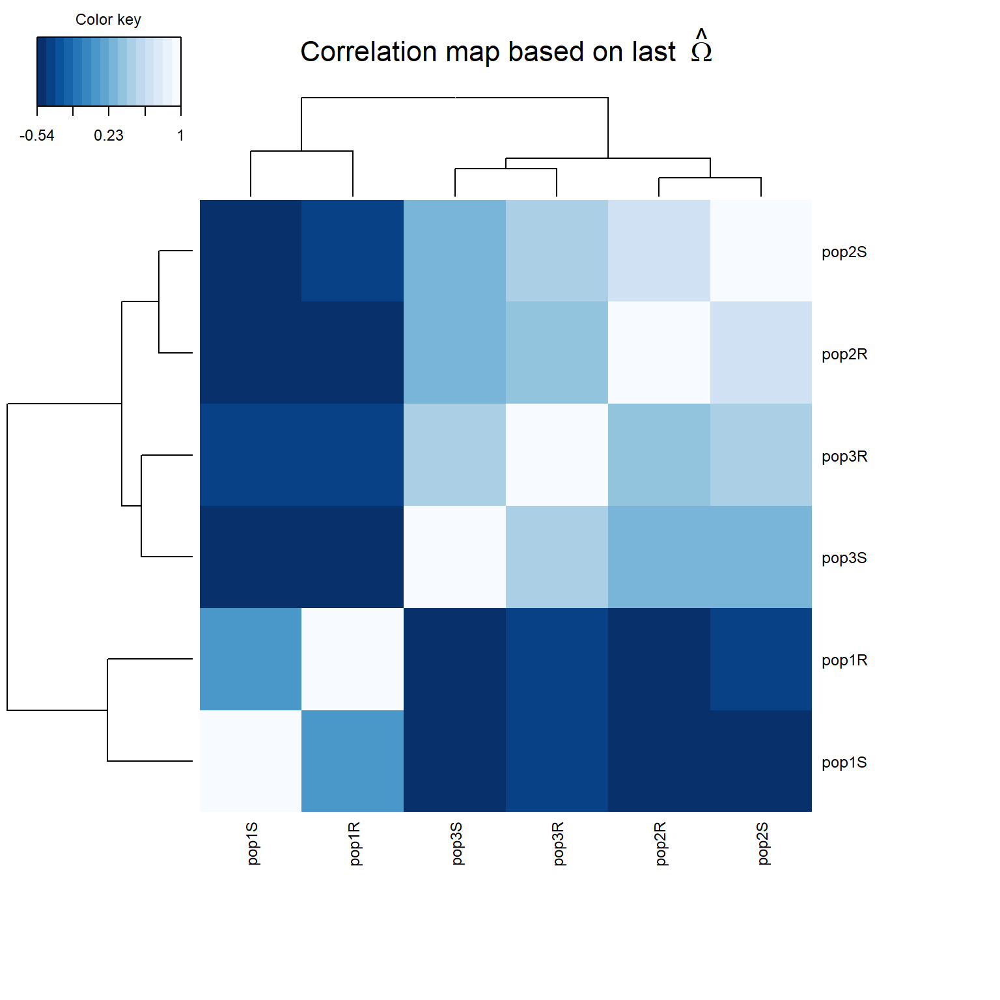
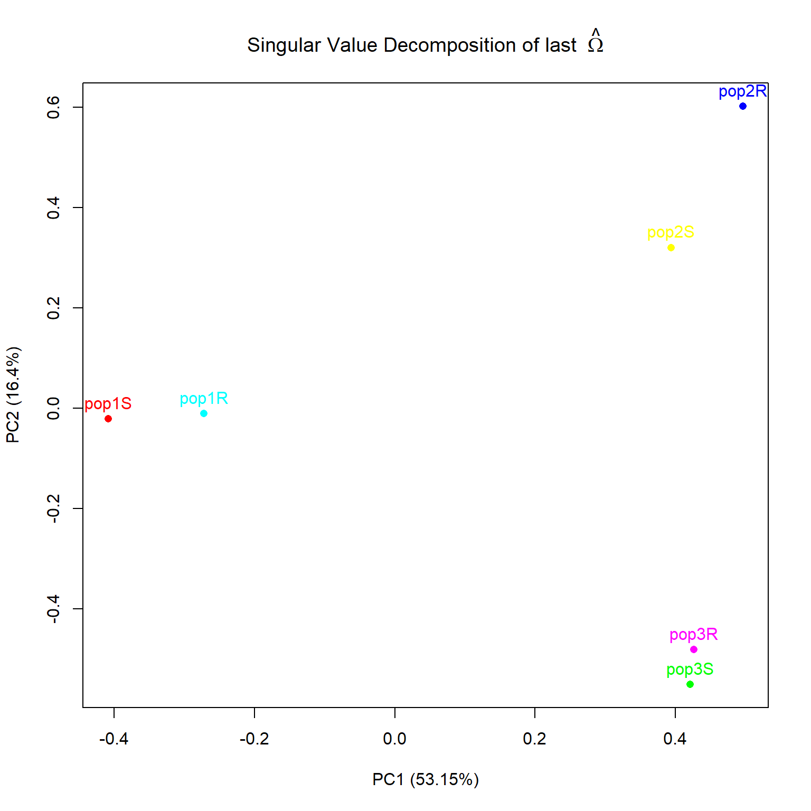

Baypass : les résultats
Validation des données analysées
Chaque sous jeu de données analysé va produire 8 fichiers de résultats avec des extensions différentes, un premier contrôle visuel utile est de vérifier que tous les fichiers partageant la même extension soient de taille identique en kilo ou méga-octets. Des différences manifestes sont signes de problèmes lors de l’analyse (crash, disque plein…) conduisant à des fichiers incomplets. Ceux qui vont focaliser notre attention en premier lieu sont les fichiers mat_omega.out qui contiennent la matrice Omega (Ω) de covariance des fréquences alléliques des populations qui est calculée à chaque analyse. Avant de regrouper les résultats, il faut s’assurer que chaque fichier du sous jeu de données a été analysé de la même manière que tous les autres, en comparant les matrices Ω entre elles. Cette comparaison se fait en évaluant un indice de distance FMD (Förstner & Moonen, 2003) entre matrices ; plus la distance sera faible (idéalement inférieure à 1) plus les matrices, donc les analyses, seront comparables.(Chunk 5)
Chunk 5 Comparaison des matrices Ω
Les fichiers de matrice sont copiés dans un dossier local puis comparés deux à deux par la fonction fmd.dist des utilitaires de BayPass pour évaluer leur distances.
Une heatmap et une décomposition en valeurs singulières de la dernière matrice sont alors affichées.
prefix <- "test_data.sub"
#liste et compte les matrices Ω du répertoire "path_Omega"
listMatrix <- list.files(path_out, pattern="mat_omega.out")
nMatrix<-length(listMatrix)
cat("Nbr matrix files =", nMatrix, "\n")## Nbr matrix files = 10#boucle sur toutes les matrices, calcule les distances FMD en pairwise et stocke le résultat
ListFMD<-c()
for (i in 1:nMatrix) for (j in 1:nMatrix) if(i!=j) {
omegaA=as.matrix(read.table(paste0(path_out, prefix, i,"_mat_omega.out")))
omegaB=as.matrix(read.table(paste0(path_out, prefix, j,"_mat_omega.out")))
FMD <- fmd.dist(omegaA, omegaB)
ListFMD <- c(ListFMD,FMD)
}
#calcule la moyenne et la sd de toutes les distances FMD
cat("FMD mean =", mean(ListFMD), "\n")## FMD mean = 0.1796614## FMD sd = 0.05272404#heatmap de la dernière matrice Ω.
colnames(omegaB) <-c(pnames)
rownames(omegaB) <-c(pnames)
cor.mat=cov2cor(omegaB)
#heatmap des liens génétiques entre population
cim_color <- colorRampPalette(rev(brewer.pal(9, "Blues")))(16)
cim(cor.mat, color = cim_color, symkey = FALSE, margins = c(10, 10), title = "Correlation map based on last "~hat(Omega))
#SVD de la dernière matrice Ω.
SVD_omega<-plot.omega(omega=omegaB, pop.names=pnames, main = expression("Singular Value Decomposition of last " * ~hat(Omega)), pos=3)
## $PC
## [,1] [,2] [,3] [,4] [,5] [,6]
## [1,] -0.4081997 -0.02095341 0.76995520 -0.05814166 -0.1472485 0.46372445
## [2,] 0.3939380 0.32041915 0.07958498 -0.24335985 -0.8202199 -0.06185381
## [3,] 0.4206730 -0.55005733 -0.03001157 0.56196008 -0.2125168 0.39825614
## [4,] -0.2720614 -0.01017025 -0.59253572 -0.35451488 -0.1364263 0.65611559
## [5,] 0.4959038 0.60230653 0.10314386 0.07540676 0.4280800 0.43786867
## [6,] 0.4257724 -0.48109548 0.19544127 -0.70016385 0.2419280 0.01758245
##
## $eig
## [1] 0.138611509 0.042762602 0.031353021 0.027993845 0.013903625 0.006169398
##
## $pcent.var
## [1] 53.149808 16.397080 12.022140 10.734083 5.331267 2.365621Une fois la moyenne des FMD calculées il est possible de visualiser les liens génétiques entre populations représentés par la matrice Ω par un plot en heatmap ainsi que par la décomposition en valeurs singulières (SVD) d’une matrice prise au hasard.Un exemple de script pour convertir une SVD en plot ggplot2 beaucoup plus maniable et paramétrable pour une publication par exemple est donné en Annexe 2 Cette matrice SVD représente les distances génétiques des populations analysées.
Concaténation des résultats
Une fois la reproductibilité des analyses vérifiées, il faut concaténer tous les fichiers de résultats, l’idée étant de faire le lien entre chaque fichier de résultat et son fichier de position snpdet.sub correspondant puis de les concaténer les uns aux autres. Les fichiers avec l’extension **__summary_pi_xtx.out_** contiennent les resultats liés à la statistique de differenciation XtX, le script (Script 5) est un exemple de script bash adapté à ce type de fichier.
Script 5 Exemple d’un script bash pour concaténer les résultats XtX.
Un boucle permet de coller chaque fichier résultat à son fichier snpdet correspondant(même numéro de subset “i”), le fichier obtenu est trié et l’entête reconstruite.
Snpdet_path='/../BayPass/Input/'
My_prefix='project_STD.sub'
#on boucle sur tous les sous fichiers
for i in {1..5}
do
file1=$(echo "$Snpdet_path/snpdet.sub""$i""")
file2=$(echo "$My_prefix""$i""_summary_pi_xtx.out")
sed -e "s/[[:space:]]\+/ /g" $file1 > SubSNP.x #on remplace tous les séparateurs par tabulation, ça évite les bugs
sed -e "s/[[:space:]]\+/ /g" $file2 | grep -v "MRK" - > SubData.x #on prend tout sauf l'entête
paste SubSNP.x SubData.x - >> tmp.xtx.merged #on colle/incrémente dans un nouveau fichier
done
#on tri par chromosome et position
awk '{for (i=1;i<=NF;i++) if ($i+0 == $i && $i ~ /e/) $2 = sprintf("%.0f", $i)} 1' tmp.xtx.merged | sort -k1,1 -k2,2n - > 8pops_M-chr1-Core.xtx
#on supprime les fichiers tmp
rm tmp.xtx.merged
rm SubSNP.x
rm SubData.x
#on insère l'entête du fichier
sed -i '1i chr pos All1 All2 MRK M_P SD_P M_XtX SD_XtX XtXst log10(1/pval)' 8pops_M-chr1-Core.xtxLes fichiers avec l’extension **__summary_betai_reg.out_** contiennent les résultats liés aux Bayes Factor, ceux avec l’extension **__summary_contrast.out_** contiennent les résultats liés à la statistique de contraste C2. Le script pour concaténer ces résultats est très similaire, une boucle est rajouté pour répéter l’opération autant de fois qu’il y a de covariables ou de combinaisons de contraste analysés, un exemple de script est disponible en Annexe 3.